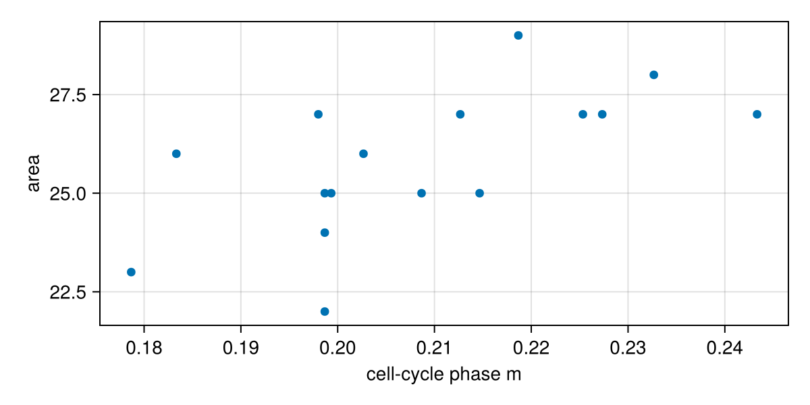
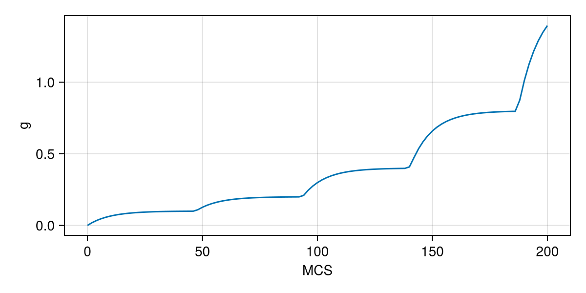

Tutorial 5: cell ODEs and ModelingToolkit components
Inside each cell, chemistry runs on its own time scale: a cell-cycle clock, a signalling pathway, a gene network. Potts.jl puts ordinary differential equations (ODEs) inside cells, written as plain equations or as ModelingToolkit systems. You will learn:
- how to write a per-cell ODE and a whole-model ODE in
@equations; - how to choose the ODE solver of a problem;
- how to put a ModelingToolkit
Systemin every cell with@components, couple it to the cell and let it trigger division; - (advanced) how to add a Boolean gene network.
The models on this page are generic teaching models.
using Potts, MakiePotts, CairoMakieA cell-cycle clock as a component
A ModelingToolkit model is built from variables, parameters and equations. Here is a one-variable cell cycle: the phase m grows at rate r/τ, so it reaches 1 after τ MCS when r = 1. Potts provides the time variable Potts.t and the derivative Potts.D:
using Potts.ModelingToolkitBase: System, @variables, @parameters
@variables m(Potts.t) = 0.0
@parameters τ = 60.0 r = 1.0
@named cycle = System([Potts.D(m) ~ r / τ], Potts.t)Model cycle:
Equations (1):
1 standard: see equations(cycle)
Unknowns (1): see unknowns(cycle)
m(t)
Parameters (2): see parameters(cycle)
r
τ@components cells(cell) cycle = cycle gives every cell of kind cell its own copy of this system. Inside the model, cycle.m is the cell's phase and cycle.r its rate:
@potts_model Cycling begin
@kinds medium cell
@parameters begin
λ = 2.0
V₀ = 25.0
T = 10.0
J[kind, kind] = [0 12; 12 6]
end
@variables p(cell) = 0.0
@components cells(cell) cycle = cycle
@lattice Lattice((60, 60); boundary = Closed(), neighborhood = Moore(1))
@energy begin
cells(cell) => λ * (volume - V₀ * (1 + cycle.m))^2
contacts => J[kind, kind′]
end
@equations begin
cycle.r ~ volume / V₀ # squeezed cells cycle more slowly
D(p) ~ 0.1 - 0.05 * p # a protein made and degraded in every cell
end
@divide cells(cell) when = cycle.m >= 1, along = RandomPlane(), cycle.m => 0.0, p => Split()
@sweep Metropolis(; temperature = T)
endThree couplings link the clock to the cell:
- The cell reads the clock. The target area
V₀ (1 + m)doubles over the cycle. - The clock reads the cell.
cycle.r ~ volume / V₀replaces the parameterrby an expression of the cell, so a compressed cell cycles more slowly. - The clock triggers division.
when = cycle.m >= 1divides the cell, andcycle.m => 0.0restarts both daughters' clocks.
D(p) ~ 0.1 - 0.05 * p is a plain per-cell ODE for the cell variable p; the scope of the variable decides the kind of equation (a cell variable gives one ODE per cell, a field a PDE, a model variable one ODE for the whole model). p => Split() halves p between the daughters.
@named cycling = Cycling()
start = layout(Tiling((5, 5); region = (28:32, 28:32), kinds = [:cell]), cycling)
prob = PottsProblem(cycling, start, (0, 200); seed = 1, capacity = 150)
sol = solve(prob, SequentialCPM(); saveat = 3)
record_potts("cell_odes_cycle.mp4", sol; framerate = 12, title = "", figure = (; size = (420, 420)))A component's variables are cell variables named component₊variable (the ₊ is typed \_+ then Tab). Read them like any other:
phases = sol[:cycle₊m][end]
alive = sol[:volume][end] .> 0
fig = Figure(size = (600, 300))
ax = Axis(fig[1, 1]; xlabel = "cell-cycle phase m", ylabel = "area")
scatter!(ax, phases[alive], sol[:volume][end][alive])
fig
The component's parameters that are not coupled become model parameters, so remake changes them: remake(prob; p = [:cycle₊τ => 30.0]) halves the cycle time.
Choosing the ODE solver
How ODEs are integrated is a choice of the problem, not of the model. The default, ode_solver = ExplicitEuler(), takes one Euler step per MCS. RK4(substeps = n) is the classic fourth-order Runge–Kutta method with n steps per MCS:
prob_rk4 = remake(prob; ode_solver = RK4(substeps = 2))
sol_rk4 = solve(prob_rk4, SequentialCPM())
count(>(0), sol_rk4[:volume][end])16Adaptive(alg; kwargs...) integrates with any adaptive SciML solver, for stiff or precise chemistry. Load the solver package first:
using OrdinaryDiffEqTsit5: Tsit5
prob_adaptive = remake(prob; ode_solver = Adaptive(Tsit5(); reltol = 1e-8))
sol_adaptive = solve(prob_adaptive, SequentialCPM())
count(>(0), sol_adaptive[:volume][end])16solvers = [p => RK4(substeps = 4)] gives one variable (or one component, cycle) its own solver and leaves the rest to ode_solver. Changing a solver regenerates the code, which takes a moment; changing parameters does not.
One MCS is one unit of ODE time by default. @sweep Metropolis(; temperature = T, mcs_duration = 0.5) makes one MCS half a time unit, to match the rates of a published ODE model.
A model-level ODE
A model variable is a single number for the whole model. Its equation can read population folds such as count(true for c in cells), the number of live cells:
@potts_model Signalling begin
@extend base = Cycling()
@variables g(model) = 0.0
@equations D(g) ~ 0.01 * count(true for c in cells) - 0.1 * g
end
@named signalling = Signalling()
prob_g = PottsProblem(signalling, start, (0, 200); seed = 1, capacity = 150)
sol_g = solve(prob_g, SequentialCPM(); saveat = 2)
fig = Figure(size = (600, 300))
ax = Axis(fig[1, 1]; xlabel = "MCS", ylabel = "g")
lines!(ax, sol_g.t, sol_g[:g])
fig
@components model drug = sys likewise adds one copy of a ModelingToolkit system to the whole model, for example a pharmacokinetic model whose dose depends on the cell count.
Advanced: a Boolean gene network
A discrete-time ModelingToolkit system with a ShiftIndex clock is a Boolean (or any discrete) network that ticks once per MCS. A(k) is the new value and A(k - 1) the previous one. Here B follows A, and A switches on when the input on is true and B was off, so the pair oscillates once the cell's signal arrives:
using Potts.ModelingToolkitBase: ShiftIndex
k = ShiftIndex(Potts.t, 0)
@variables A(Potts.t)::Bool = false B(Potts.t)::Bool = true
@parameters on::Bool = false
@named grn = System([A(k) ~ on & !B(k - 1), B(k) ~ A(k - 1)], Potts.t)
@potts_model GeneSwitch begin
@kinds medium cell
@variables signal(cell) = 0.0
@components cells(cell) grn = grn
@lattice Lattice((30, 30); boundary = Closed(), neighborhood = Moore(1))
@energy begin
cells(cell) => (volume - 25.0)^2
contacts => 10 * (kind != kind′)
end
@equations grn.on ~ signal > 0.5
@after_mcs signal ~ ifelse(mcs > 5, 1.0, 0.0)
@sweep Metropolis(; temperature = 5.0)
end
@named switch = GeneSwitch()
op = layout(Tiling((5, 5); region = (11:15, 11:15), kinds = [:cell]), switch)
sol_grn = solve(PottsProblem(switch, op, (0, 15)), SequentialCPM(); saveat = 1)
[Int(x[1]) for x in sol_grn[:grn₊A]] # A of cell 1 at each MCS16-element Vector{Int64}:
0
0
0
0
0
0
0
1
1
0
0
1
1
0
0
1Nodes are stored as 0/1 cell variables, can trigger division (when = grn.A & (volume > 40)), and can be coupled to continuous components.
What you learned
D(x) ~ …in@equationsis a per-cell ODE for acellvariable and a global ODE for amodelvariable.@components cells(k) name = sysputs a ModelingToolkit system in every cell; couple it withname.param ~ expressionand read it asname.var.- The problem chooses the integrator:
ode_solver = ExplicitEuler(),RK4(substeps = n)orAdaptive(alg), andsolvers = [...]per variable.
Next, Tutorial 6 links cells together.